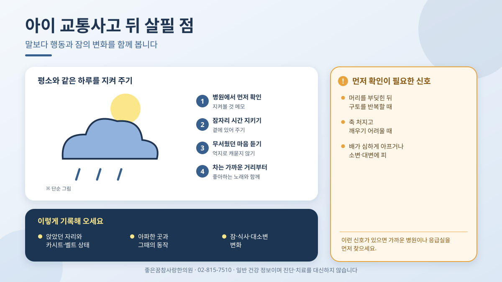

이종호 한의사 감수좋은꿈참사랑한의원 대표원장 (한의사 면허번호 19769)발행 2026-11-26 · 수정 2026-11-26
이 글의 차례
사고가 난 날 저녁, 아이는 생각보다 멀쩡해 보였습니다. 평소처럼 밥도 먹고 만화도 보고 잠도 들었습니다. 그런데 이틀째 되는 날부터 아이가 자꾸 목을 만지작거리고, 차에 타자고 하면 울먹입니다. 밤에는 몇 번이나 깨서 엄마를 찾습니다.
교통사고로 아이와 함께 오시는 부모님께 가장 많이 듣는 말은 "아이가 괜찮다고 하는데 정말 괜찮은 건지 모르겠어요"입니다. 아이들은 아픈 곳을 어른처럼 정확히 말하지 못하고, 놀란 마음은 말보다 행동과 잠으로 먼저 드러나는 경우가 많기 때문입니다.
아이의 몸은 어른보다 유연해서 같은 충격에도 겉으로는 덜 다친 것처럼 보일 수 있습니다. 하지만 머리가 몸에 비해 크고 목 근육이 아직 약해서, 고개가 흔들리는 사고에서는 목과 어깨에 부담이 갈 수 있습니다. 카시트나 안전벨트 위치에 따라 배나 가슴이 눌리기도 합니다.
이 글에서는 사고 뒤 아이를 먼저 어디서 확인받아야 하는지, 며칠 동안 무엇을 지켜보면 좋은지, 몸의 불편과 마음의 놀람을 어떻게 나눠 살피는지, 한의원에서는 무엇을 여쭙고 어떤 범위에서 함께할 수 있는지 차례로 정리했습니다.
아이가 사고를 겪었다면 어디서 먼저 확인받나요?
아이가 탄 차에 사고가 났다면 겉으로 괜찮아 보여도 소아청소년과나 병원에서 먼저 확인받으시길 권합니다. 특히 머리를 부딪혔거나, 카시트에서 몸이 많이 빠져나왔거나, 벨트에 배가 세게 눌렸다면 검사를 미루지 않는 것이 좋습니다.
아이는 아파도 놀람과 긴장 때문에 당일에는 잘 표현하지 않는 경우가 있습니다. 병원에서 확인을 받은 뒤에도 며칠 동안 지켜볼 것이 무엇인지 꼭 여쭤 두시고, 그 설명을 메모해 두시면 집에서 아이를 살필 때 기준이 됩니다. 병원에서 받은 검사 결과지와 처방전도 한곳에 모아 두세요.
한의원 진료는 이 확인이 끝난 뒤, 큰 이상은 없다는 말을 들었는데도 아이가 불편해하거나 잠과 식사가 흔들릴 때 함께 살피는 자리입니다. 병원 진료를 대신하는 것이 아니라 그다음 회복을 나란히 돕는 것이라고 생각해 주시면 됩니다.
왜 아이는 아파도 괜찮다고 말할까요
아이들은 몸의 불편을 어른처럼 '어디가 어떻게 아프다'고 나눠 말하기 어렵습니다. 목이 뻐근해도 "그냥 이상해"라고 하거나, 배가 불편해도 "밥 먹기 싫어"라고 말합니다. 어린아이일수록 아픈 것과 무서운 것, 피곤한 것을 구분해 표현하기가 더 어렵습니다.
사고 직후 부모님이 놀라고 걱정하는 모습을 보면, 아이는 자기가 아프다고 하면 엄마 아빠가 더 힘들어할까 봐 괜찮다고 말하기도 합니다. 반대로 부모님의 걱정이 크면 아이의 불안도 함께 커져 작은 불편을 더 크게 느끼기도 합니다.
그래서 아이의 말만 듣기보다 행동을 함께 보는 것이 중요합니다. 고개를 한쪽으로 기울이고 있는지, 놀이를 하다 자주 멈추는지, 안아 달라는 일이 늘었는지, 평소 좋아하던 활동을 피하는지를 며칠 동안 차분히 지켜봐 주세요.
며칠 동안 지켜볼 몸의 신호
사고 뒤 처음 며칠은 아이의 몸이 조금씩 반응을 보이는 시기입니다. 다음과 같은 모습이 있는지 살펴보시면 진료 때 큰 도움이 됩니다.
- 고개를 돌리거나 숙이기 싫어하고, 목이나 어깨를 자꾸 만지는 모습
- 안아 올리거나 옷을 갈아입힐 때 특정 자리를 아파하는 모습
- 걷거나 뛸 때 한쪽 다리를 아끼거나, 계단을 피하는 모습
- 안전벨트가 지나간 자리에 멍이 들거나 만지면 아파하는 모습
- 머리가 아프다, 어지럽다, 속이 울렁거린다는 말
이 가운데 어떤 모습이 처음보다 점점 심해진다면 병원에 다시 문의해 보세요. 반대로 하루하루 줄어든다면 회복의 방향으로 가고 있는 경우가 많으니, 그 변화를 날짜와 함께 기록에 남겨 두시면 됩니다.
몸보다 먼저 드러나는 마음의 신호
아이에게 사고는 몸의 충격만큼 마음의 놀람으로 남습니다. 어른은 상황을 이해하고 정리할 수 있지만, 아이는 그 놀람을 어떻게 다뤄야 할지 몰라 행동과 잠으로 드러내는 경우가 많습니다.
- 차에 타기 싫어하거나, 차 소리와 경적에 깜짝 놀라는 모습
- 밤에 자주 깨거나, 무서운 꿈을 꾸고 혼자 자기 싫어하는 모습
- 평소보다 짜증이 늘고, 부모님 곁을 떠나지 않으려는 모습
- 사고 장면을 놀이나 그림으로 반복해서 표현하는 모습
- 이미 가렸던 대소변 실수가 다시 생기는 모습
이런 모습은 놀란 마음을 스스로 다루려는 자연스러운 반응인 경우가 많습니다. 다그치거나 혼내거나 서둘러 고치려 하기보다, 아이가 안전하다고 느낄 수 있도록 곁에 있어 주는 것이 먼저입니다. 몇 주가 지나도 줄지 않거나 일상이 크게 흔들린다면 소아청소년과나 소아 정신건강 진료를 함께 상의해 보시길 권합니다.
먼저 이렇게 여쭙니다
아이와 함께 오시면 부모님께 대략 이런 순서로 여쭙니다. 미리 떠올려 오시면 진료 시간이 짧아져 아이도 덜 지칩니다.
- 사고 때 아이는 어디에 앉아 있었고, 카시트나 벨트는 어떻게 하고 있었나요?
- 머리나 배를 부딪히거나 눌렸나요? 병원에서는 어떤 설명을 들으셨나요?
- 아이가 아프다고 한 곳, 만지면 싫어하는 곳이 있나요?
- 사고 뒤 잠과 식사, 대소변은 어떻게 달라졌나요?
- 차를 타거나 사고 이야기를 할 때 아이가 어떤 반응을 보이나요?
- 지금 먹고 있는 약이나 영양제가 있나요?
아이에게는 그림이나 인형을 보여 주며 "여기가 아파?" 하고 물어보기도 합니다. 말로 설명하기 어려운 아이도 손가락으로 가리키는 것은 훨씬 쉽게 해내는 경우가 많습니다.
집에서 먼저 해 볼 수 있는 것
사고 뒤 아이에게 가장 필요한 것은 평소와 같은 하루입니다. 일어나는 시각, 밥 먹는 시각, 잠드는 시각을 되도록 평소처럼 지켜 주시면 아이는 일상이 다시 안전하다는 것을 몸으로 느끼게 됩니다.
- 목이나 어깨를 불편해하면 따뜻한 수건으로 잠시 감싸 주기
- 뛰기, 매달리기, 구르기처럼 몸을 크게 쓰는 놀이는 불편이 줄 때까지 잠시 줄이기
- 잠들기 전 조명을 낮추고 책을 읽어 주며 함께 있는 시간 늘리기
- 사고 이야기를 아이가 꺼내면 끝까지 들어 주고, 억지로 캐묻지는 않기
- 차를 다시 탈 때는 가까운 거리부터, 좋아하는 노래나 장난감과 함께 천천히 시작하기
아이가 사고 이야기를 할 때는 "무서웠구나, 지금은 괜찮아" 하고 마음을 먼저 받아 주세요. "다 잊어버려" 하고 서둘러 덮기보다, 무서웠던 마음을 말해도 괜찮다는 것을 알려 주는 편이 아이의 놀람을 가라앉히는 데 더 도움이 됩니다.
카시트는 사고를 겪은 뒤 다시 써도 되는지 제조사 안내를 확인해 보세요. 사고의 정도에 따라 교체를 권하는 경우가 있습니다. 아이의 체격에 맞는 카시트나 부스터를 바르게 쓰고, 어깨띠가 목이 아닌 어깨 가운데를 지나는지 확인하는 것이 다음을 위한 준비입니다.
어린이집과 학교로 돌아갈 때
사고 뒤 아이가 어린이집이나 학교로 돌아갈 때는 선생님께 사고 사실과 지금 아이 상태를 간단히 알려 주시길 권합니다. 체육 시간이나 바깥 놀이에서 무리하지 않도록, 그리고 아이가 평소와 다른 모습을 보이면 연락받을 수 있도록 부탁해 두면 마음이 놓입니다.
무거운 책가방은 한동안 가볍게 꾸려 주세요. 목과 어깨가 불편한 아이에게 무거운 가방은 생각보다 큰 부담이 됩니다. 꼭 필요한 것만 넣고, 양쪽 어깨끈을 모두 메도록 알려 주는 것만으로도 도움이 됩니다.
통학 차량이나 학원 차를 타는 것을 두려워한다면 처음 며칠은 부모님이 함께 타거나 걸어서 데려다주는 방법도 있습니다. 아이가 조금씩 익숙해질 시간을 주면, 대부분은 다시 차에 오르는 일을 받아들이게 됩니다.
형제자매와 부모님의 마음도 함께
사고 차에 함께 타고 있던 형제자매도 놀람을 겪었을 수 있습니다. 다친 아이에게 관심이 쏠리는 동안 다른 아이가 조용히 불안을 삼키고 있지는 않은지 함께 살펴봐 주세요. 잠과 식사, 행동의 변화를 같은 방법으로 지켜보시면 됩니다.
부모님도 사고를 겪은 당사자입니다. 운전석에 있었다면 미안함과 죄책감이 크고, 아이 걱정에 잠을 설치기 쉽습니다. 부모님이 조금 편해져야 아이도 편안함을 느낍니다. 부모님 몸에 불편이 있다면 아이와 함께 진료를 받으셔도 좋습니다. 아이는 부모님이 진료받는 모습을 보며 낯선 진료실을 덜 무서워하기도 합니다.
한의원에서 함께 살필 수 있는 경우
- 병원에서 큰 이상은 없다고 들었지만 아이가 목과 어깨를 계속 불편해하는 경우
- 사고 뒤 아이의 잠이 얕아지고 밤에 자주 깨는 경우
- 사고 뒤 입맛이 떨어지고 배가 아프다는 말이 늘어난 경우
- 부모님과 아이가 함께 사고 뒤 불편을 살피고 싶은 경우
좋은꿈참사랑한의원에서는 진찰한 내용을 바탕으로 아이에게 맞는 방법을 조심스럽게 정합니다. 아이가 겁을 많이 낸다면 침보다 따뜻한 온열 관리와 생활 안내부터 시작하기도 하고, 진료 시간도 아이가 견딜 수 있는 만큼으로 짧게 잡습니다.
한약 상담이 필요한 경우에는 아이의 체중과 먹고 있는 약을 먼저 확인하고 신중하게 정합니다. 소아청소년과에서 처방받은 약이 있다면 처방대로 이어 가시고, 아이 상태에 따라 소아청소년과 진료와 나란히 받으실 수 있습니다.
자동차보험으로 아이 진료를 받으실 수 있는지, 접수에 필요한 것이 무엇인지는 상황마다 다를 수 있으니 보험사 접수 번호를 메모해 두시고 한의원 접수 전 전화로 확인해 주세요.
이렇게 기록해 오시면 상담이 쉬워집니다
아이의 변화는 하루하루 작아서 지나고 나면 기억이 흐려집니다. 일주일 정도만 간단히 적어 오시면 아이의 회복 흐름이 또렷하게 보입니다.
- 사고 날짜와 아이가 앉아 있던 자리, 카시트나 벨트 상태
- 병원에서 들은 설명과 지켜보라고 한 것
- 아이가 아파한 곳과 그때의 동작
- 잠든 시각과 깬 횟수, 무서운 꿈을 꾼 날
- 식사량과 배 아프다는 말, 대소변 변화
- 차를 탈 때나 사고 이야기를 할 때의 반응
아이가 아파하는 자리를 그림으로 그려 오시거나, 불편해하는 동작을 휴대폰으로 짧게 찍어 오셔도 좋습니다. 진료실에서는 아이가 긴장해서 평소 모습을 잘 보여 주지 않는 경우가 많기 때문입니다.
기록을 하다 보면 부모님의 걱정도 조금씩 정리됩니다. 막연히 불안하던 마음이 '어제보다 깬 횟수가 줄었네'처럼 눈에 보이는 변화로 바뀌면, 아이를 지켜보는 마음에도 여유가 생깁니다.
아이는 곁에 있는 어른을 보며 회복합니다
아이에게 사고는 크고 낯선 일이지만, 곁에 있는 어른이 차분하게 지켜 주면 생각보다 단단하게 그 시간을 지나갑니다. 아이의 작은 변화를 알아봐 주고, 무서웠던 마음을 들어 주고, 평소의 하루를 지켜 주는 것이 가장 큰 돌봄입니다.
이번 주에는 잠자리 시간 지키기, 잠들기 전 함께 책 읽기, 짧은 기록 남기기 가운데 하나를 골라 시작해 보세요. 기록과 함께 오시면 아이의 몸과 마음을 함께 살피고, 다음 걸음을 정하겠습니다.
아이의 회복은 어른보다 빠를 때도 있고, 마음의 놀람은 몸보다 조금 늦게 풀리기도 합니다. 몸이 다 나은 것 같아도 몇 주 동안은 잠과 기분, 식사의 변화를 가볍게 지켜봐 주세요. 그렇게 곁을 지켜 준 시간이 아이에게는 다시 세상을 믿는 힘이 됩니다.
이런 증상은 먼저 확인이 필요합니다
- 머리를 부딪힌 뒤 구토를 반복하거나 평소와 달리 축 처지고 깨우기 어려운 경우
- 배가 점점 심하게 아프고 단단해지거나 소변이나 대변에 피가 섞인 경우
이런 신호가 있으면 한의원보다 가까운 병원이나 응급실을 먼저 찾으세요.
함께 읽으면 좋은 글
- 뒷자리에 타고 있다가 사고가 났을 때도 살펴야 하나요?
- 교통사고 뒤 한의원에는 언제 가면 되나요?
- 사고나 큰 충격을 겪은 뒤 장면이 자꾸 떠오르고 잠이 깨는 외상 뒤 스트레스 반응은 어떻게 살피나요?
- 아이가 배가 아프다고 할 때 위치와 시간은 어떻게 적어 두면 좋을까요?
- 교통사고 뒤 자동차보험으로 한의원 치료를 받으려면 어떻게 진행되나요?

여쭙는 것
- 사고 때 아이는 어디에 앉아 있었고, 카시트나 벨트는 어떻게 하고 있었나요?
- 머리나 배를 부딪히거나 눌렸나요? 병원에서는 어떤 설명을 들으셨나요?
- 아이가 아프다고 한 곳, 만지면 싫어하는 곳이 있나요?
한의원에서 함께 살필 것
- 병원에서 큰 이상은 없다고 들었지만 아이가 목과 어깨를 계속 불편해하는 경우
- 사고 뒤 아이의 잠이 얕아지고 밤에 자주 깨는 경우
- 사고 뒤 입맛이 떨어지고 배가 아프다는 말이 늘어난 경우
먼저 확인이 필요한 신호
- 머리를 부딪힌 뒤 구토를 반복하거나 평소와 달리 축 처지고 깨우기 어려운 경우
- 배가 점점 심하게 아프고 단단해지거나 소변이나 대변에 피가 섞인 경우
한눈에 보는 표
| 구분 | 핵심 |
|---|---|
| 여쭙는 것 | 사고 때 아이는 어디에 앉아 있었고, 카시트나 벨트는 어떻게 하고 있었나요? 머리나 배를 부딪히거나 눌렸나요? 병원에서는 어떤 설명을 들으셨나요? |
| 한의원에서 함께 살필 것 | 병원에서 큰 이상은 없다고 들었지만 아이가 목과 어깨를 계속 불편해하는 경우 사고 뒤 아이의 잠이 얕아지고 밤에 자주 깨는 경우 |
| 먼저 확인이 필요한 신호 | 머리를 부딪힌 뒤 구토를 반복하거나 평소와 달리 축 처지고 깨우기 어려운 경우 배가 점점 심하게 아프고 단단해지거나 소변이나 대변에 피가 섞인 경우 |
자주 묻는 질문
아이가 괜찮다고 하는데 병원에 꼭 가야 하나요?
아이는 아파도 당일에는 잘 표현하지 않는 경우가 있어, 사고를 겪었다면 소아청소년과나 병원에서 먼저 확인받으시길 권합니다. 그 뒤 며칠 동안 지켜볼 것을 함께 여쭤 두세요.
아이도 침을 맞을 수 있나요?
진찰한 뒤 아이의 상태와 마음을 보고 정합니다. 겁이 많다면 따뜻한 온열 관리와 생활 안내부터 시작하기도 하고, 진료 시간도 아이가 견딜 수 있는 만큼으로 짧게 잡습니다.
사고 뒤 아이가 밤에 자주 깨요. 어떻게 해야 하나요?
놀란 마음이 잠으로 드러나는 경우가 많습니다. 잠자리 시간을 평소처럼 지키고, 잠들기 전 곁에 있어 주는 시간을 늘려 보세요. 몇 주가 지나도 줄지 않으면 진료 때 함께 살펴봅니다.
아이가 차를 타기 싫어하면 억지로라도 태워야 하나요?
억지로 태우기보다 짧은 거리부터, 좋아하는 노래나 장난감과 함께 천천히 다시 익숙해지도록 돕는 편이 좋습니다. 아이의 두려움을 먼저 받아 주세요.
좋은꿈참사랑한의원은 재진 때 지난번 이야기부터 이어서 여쭙니다. 진료시간과 예약은 오시는 길에서 확인하세요.
어디서 상담받을 수 있나요?
좋은꿈참사랑한의원은 서울 동작구 만양로2길 2 신성빌딩 3층·5층(서울 동작구 상도동, 7호선 상도역 3번 출구 근처)에 있습니다. 한의사 3명(이종호 대표원장, 조영기 수석진료원장, 정원영 진료원장)이 진료합니다. 진료시간은 평일 09:30~20:00(점심 13:00~14:00), 토·일·공휴일 09:30~15:00이며, 방문 전 전화로 확인을 권합니다. 예약은 네이버 예약, 카카오톡 상담, 전화 02-815-7510로 받습니다.
이 글은 일반적인 건강 정보이며 개인의 진단이나 치료를 대신하지 않습니다. 증상이 있거나 복용 중인 약이 있다면 진료를 통해 확인하세요. 치료 효과는 개인마다 다를 수 있습니다.
작성 기준: 일반적으로 알려져 있는 건강 정보를 참고해 정리했습니다(대표원장 감수). 증상 기록은 1~2주 동안 하루 1회, 비슷한 시간에 적어 오시면 지난 상태와 비교하기 쉽습니다.